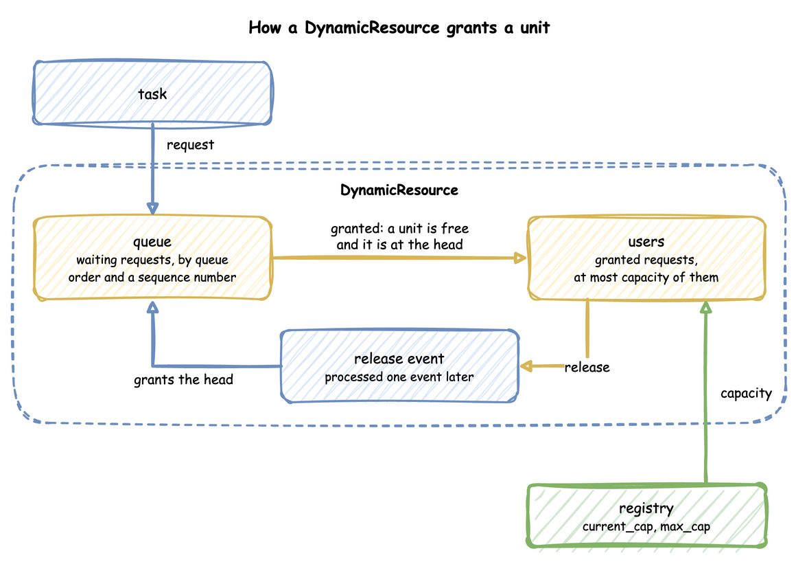
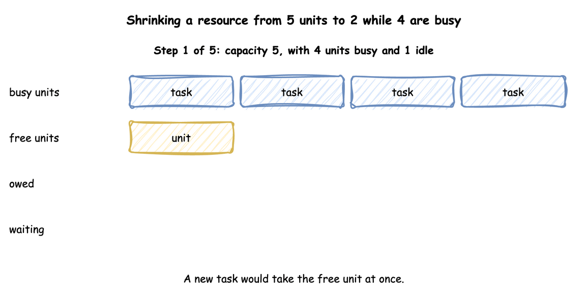

Resources: DynamicResource
A resource is what an entity must hold while it works, and may have to wait for. This page shows how to declare one, how its queue is ordered, how it hands out units, and what happens when its capacity changes during a run.
What It Is
A resource is a number of identical units: packers, packing benches, checkout lanes, loading bays. A task asks for one unit, waits in the resource's queue while every unit is busy, holds the unit while it works, and gives it back. How many units there are is the resource's capacity, and it can change while the run goes on, as when packers go on a break.
How to Use It
Declare a Resource
A resource has a current_cap, the number of units now, and a max_cap, the most a live change can set. run() builds a DynamicResource for each one the context declares; in the low-level API you build it after registering the parameters:
| docs/snippets/pages/resources.py:resource | |
|---|---|
packers.request() is an event that happens when a unit is granted, and leaving the with block gives the unit back. A request whose with block is left before it is granted, for example after a timeout, is cancelled and never takes a unit.
Queue Order
queue sets the order in which a resource serves the requests waiting for it:
fifo, the default: the oldest first;lifo: the newest first;priority: the lowest priority number first, and the oldest first among equal priorities.
Four requests that join while the only unit is busy are served in these orders:
The last line is the capacity drop that Under Live Changes describes, below. The same four requests, drawn:

Task Priority
Under queue: priority, each task gives its requests a priority: a number, the same for every run of the task; an expression, read when the task joins the queue, such as attr.tier for the entity's attribute tier; or, in the builder, a function of the task id and the entity's attributes. The attributes exist before the request queues, and the task's own payload does not, so a priority cannot read it; an expression can read the previous task's payload as payload.<field>. The lowest priority is served first, and equal priorities first in, first out, which is the order of SimPy's PriorityResource: it ranks a request by (priority, time, not preempt), so among equal priorities and times a request that may preempt goes before one with preempt: false. The tests check it, ties included, in all three APIs (SimPy Compatibility).
A low-level process passes the priority to the request: packers.request(priority=entity.attributes["tier"]), as the queue-order example above does. A resource whose queue is fifo or lifo ignores it.
A priority on a task whose resource does not have queue: priority is refused: when the blueprint loads, or when run() starts. Priorities shows what priority does to waits.
Preemption
On a resource with preempt: true, which needs queue: priority, a request that finds every unit busy takes a unit from a task of a higher priority value, as SimPy's PreemptiveResource does. The task that loses the unit is chosen by SimPy's rule: the user whose (priority, request time, may not preempt) sorts last, and only when that sorts after the new request, so equal priorities do not preempt; the one exception is a user whose request was made at the same moment as the new one with preempt: false, which sorts after a request that may preempt. The task publishes preempted with the resource's name and follows its on_interrupt, as an interrupt would (Interruptions); a task with preempt: false never takes a unit this way. The interruptions example lets express orders preempt regular ones:
| examples/yaml/interruptions.yaml:packers | |
|---|---|
| examples/builder/interruptions_example.py:packers | |
|---|---|
| examples/builder/interruptions_example.py:pack | |
|---|---|
DynamicResource(env, "Shop", "packers", queue="priority", preempt=True) builds the resource, and request(priority, preempt=True) asks for a unit; the process that loses its unit receives simpy.Interrupt with a SimPy Preempted cause, whose resource, by and usage_since say what happened.
Cancel and Release
A task that leaves a queue cancels its request, so the request is never granted later: patience that runs out, an interrupt, and an on_interrupt: abandon all do. Once a unit is granted, the task gives it back when it finishes, when it is interrupted, and when it is preempted (the preempting task has it then). In the low-level API these are SimPy's calls:
request.cancel() takes a waiting request out of the queue and does nothing to a granted one, and packers.release(request) gives a granted unit back once; releasing it again, or releasing a request that was never granted, gives nothing back. A with block does both on its way out, as in SimPy.
Several Resources
A task can hold several resources at once: resource: [picker, bench] asks for a picker, then, while it holds the picker, for the bench. The task is served once it holds all of them, and it releases all of them when it finishes. While it waits for the bench it holds the picker: the holding is partial, and nothing is granted to several resources at once. patience covers the whole acquisition, and an interrupt gives back every unit held.
A task can also hand a unit to the next task of its flow with keep: the next task holds it from the start and gives it back once it publishes started, so an order keeps the picker until it is on the packing bench. The competing-resources example does both:
In the low-level API several resources are nested requests, and a handoff is a request released by the next process.
One order of acquisition. Two tasks that acquire the same two resources in opposite orders can each hold one and wait for ever for the other. desflow refuses such a model when it is built, naming both tasks: every task, keep handoffs included, must acquire shared resources in one order. Competing Resources shows what a partial holding costs.
Breakdowns
A breakdown makes a resource fail at random and be repaired. time_to_failure is the time from the start, or from a repair, to the next failure, on calendar time, busy or idle; repair is how long a repair takes. While the resource is down its effective capacity is 0 and no request is granted:
| examples/low-level/breakdowns_example.py:station | |
|---|---|
Start run_breakdowns(env, station, sampler, work="interrupt") as a SimPy process beside the arrivals. station.fail() and station.repair() put a resource down and back by hand.
work says what happens to the tasks being served: interrupt, the default, interrupts each with the cause breakdown, and it follows its on_interrupt; finish lets them finish. Each failure and repair publishes an event keyed by the resource's name, with status down or repaired and reason: failure. Breakdowns checks the downtime of the example, and Interruptions explains on_interrupt.
Registry Paths and Readings
Each resource has two registry paths, <sim_id>.resources.<name>.current_cap and .max_cap, which a scenario, an ingress message or a process can change; Live Parameters explains how. A resource that breaks down adds <sim_id>.breakdown.<name>.time_to_failure and .repair, its two distributions. With statistics at the minimal level or above, each resource publishes four readings, such as Shop.stats.resources.packers.utilization: capacity, in_use, queue_length and utilization, the busy units as a percentage of the capacity; one that breaks down adds down, 1 while it is down. Statistics lists what the other levels add, among them downtime and failures.
Example: Interruptions
The interruptions example: express orders preempt regular ones, and a fire drill at 60 seconds interrupts the order being packed; each resumes with the packing time it had left. It needs no Docker service and ends on its own after 120 simulation seconds.
Quick Start
desflow examples get downloads the example at the release you install, into a folder of its own. Pick uv or pip:
The whole file is examples/yaml/interruptions.yaml.
Quick Start
desflow examples get downloads the example at the release you install, into a folder of its own. Pick uv or pip:
The whole file is examples/builder/interruptions_example.py.
Quick Start
desflow examples get downloads the example at the release you install, into a folder of its own. Pick uv or pip:
The whole file is examples/low-level/interruptions_example.py.
Example: Competing Resources
The competing-resources example: orders keep the picker until they are on the bench, and gifts hold the picker and the bench together. It needs no Docker service and ends on its own after 120 simulation seconds.
Quick Start
desflow examples get downloads the example at the release you install, into a folder of its own. Pick uv or pip:
The whole file is examples/yaml/competing_resources.yaml.
Quick Start
desflow examples get downloads the example at the release you install, into a folder of its own. Pick uv or pip:
The whole file is examples/builder/competing_resources_example.py.
Quick Start
desflow examples get downloads the example at the release you install, into a folder of its own. Pick uv or pip:
The whole file is examples/low-level/competing_resources_example.py.
How It Works
A DynamicResource grants units the way SimPy's Resource does, with two lists: queue, the waiting requests ranked by the queue order and a sequence number, so requests that rank the same are served in the order they arrived, and users, the granted requests. A request is granted when it is made if a unit is free and nothing waits ahead of it. Otherwise it waits, and each release grants the head of the queue when its release event is processed, one event later, as SimPy's Release does:

Because each step is the one SimPy takes, two events at the same simulation time are granted in SimPy's order: a waiting order whose patience runs out at the instant a unit is released reneges or is served exactly as it would in plain SimPy. in_use counts users: it goes up when a request is granted and down when a unit is released.
A waiting request leaves the queue at once when it is cancelled, which a with block does when it is left before the grant; request.cancel() does the same by hand. packers.release(request) gives a granted unit back. Cancelling a granted request releases nothing, and releasing a request twice, or one never granted, gives nothing back, as in SimPy. Every release still tries the head of the queue when its release event is processed, as SimPy's does: when a request that reneged was the head, the request behind it may then be granted or preempt a user.
SimPy and desflow. SimPy's Resource serves requests in the order they arrive, and PriorityResource by priority. Both take their capacity when they are created and keep it: capacity has no setter, so assigning a new one raises AttributeError (SimPy 4.1). desflow builds its own resource so the capacity can follow the registry and the queue order can be chosen; the request() call and the with block are SimPy's, so code written for SimPy works unchanged. SimPy and desflow compares the two.
Under Live Changes
A change to current_cap takes effect at once, without stopping any work:
- Growing grants waiting requests at once, up to the new capacity.
- Shrinking stops nothing. The units still busy above the new capacity are owed: each one given back brings the busy count down, and no waiting task starts until the busy count is within the new capacity.
- Growing again before the owed units are given back cancels them first, so only the rest of the rise grants waiting requests.
- A
current_capoutside 0 tomax_capis clamped to that range, with a warning. - Lowering
max_caplowers the capacity with it. Acurrent_capabove the newmax_capis stored asmax_cap, with a warning. - During a repair the capacity is 0 and
current_capkeeps the planned value. A change to it sets the capacity the resource returns to and does not end the repair.
The example below takes three of five packers off the floor while four orders are being packed: the capacity is 2 at once, and in_use stays 4 until two orders finish. The animation steps through it:

Until the owed units finish, in_use is above capacity, and the utilization reading is above 100.
Stability and Limits
- Utilisation decides waits. A resource whose load is at or above its capacity has a queue that grows for as long as the run lasts; Queues and Capacity shows how to work it out.
- Priority needs
queue: priority. A task priority on a resource of another order is a load error, while a low-level request's priority is ignored underfifoandlifo. - Priority can starve. Under
priority, a request with a high number is served only when no lower number is waiting; if the low numbers alone keep the resource busy, it is never served. - One order of acquisition. A model whose tasks acquire two resources in opposite orders is refused; Several Resources explains why.
- A shrink never stops work. Lowering
current_caplets busy units finish. Work in progress stops only for an interrupt, a preemption or a breakdown: Interruptions, and Breakdowns for a machine that fails. - A preempted task queues again. With
resumeorrestartit joins the back of its priority among the waiting requests, as a new SimPy request does; the time it waited before counts in its wait.
Amounts and items that tasks take and add, rather than hold, are Stores and Containers.